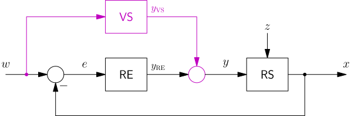
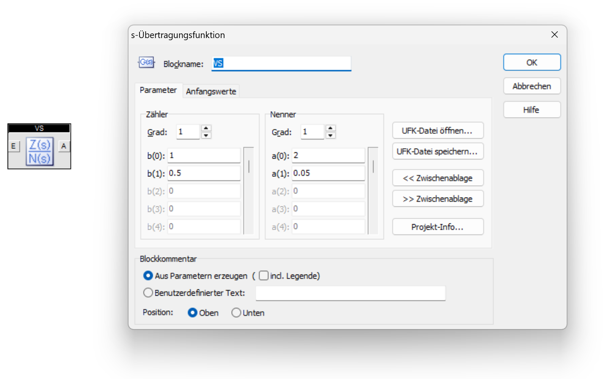
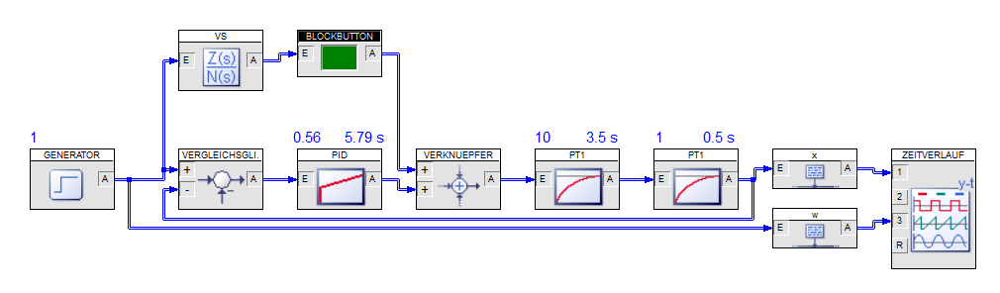
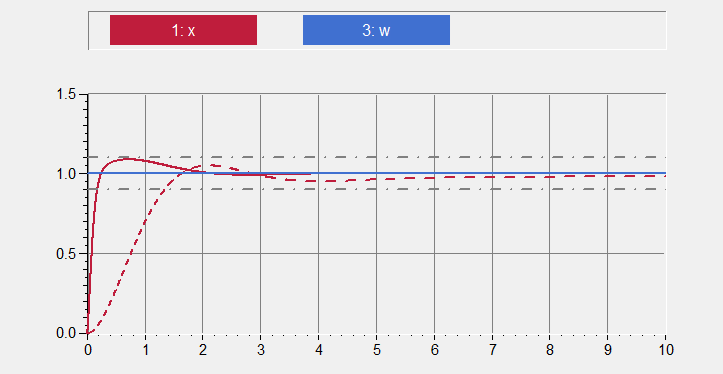
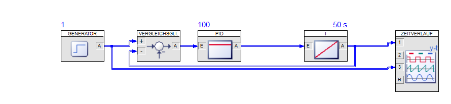
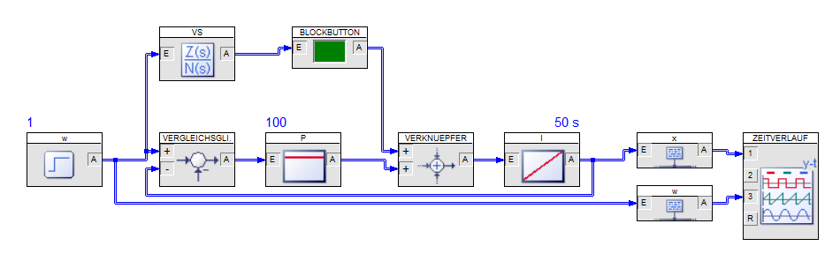
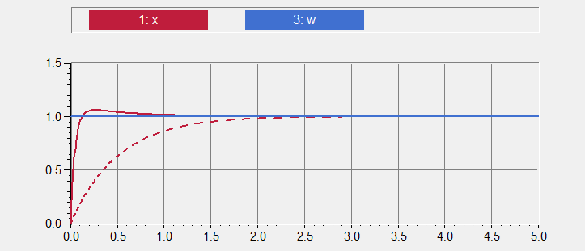

6 Vorsteuerung
Mit den Werkzeugen aus dem Frequenzbereich im “Rucksack” kehren wir nun wieder zurück zu den erweiterten Regelkreisstrukturen (vgl. Abschnitt 1) und schauen das Prinzip der Vorsteuerung an.
- Du kannst die Idee hinter der Vorsteuerung erklären.
- Du kannst eine Vorsteuerung für eine gegebene Regelstrecke entwerfen.
- Du weisst, wie du in Boris ein Übertragungsglied mit einer beliebigen Frequenzgang-Funktion (Übertragungsfunktion) realisieren kannst.
Die Grundidee hinter der Vorsteuerung besteht darin, die positiven Eigenschaften der Steuerung(Geschwindigkeit, Stabilität) mit den positiven Eigenschaften der Regelung (Genauigkeit, Robustheit) zu kombinieren.
| ✅ positiv | ❌ negativ | |
|---|---|---|
| Steuerung | schnell, stabil | ungenau, evtl. nicht robust |
| Regelung | genau, robust | evtl. langsam, evtl. instabil |
Idealerweise kann die Steuerung primär das Führungsverhalten übernehmen und die Regelung das Störverhalten (und das Ausgleichen von Nichtlinearitäten bzw. sonstigen verbleibenden Abweichungen). Das Führungs- und Störverhalten kann damit wesentlich entkoppelt werden.
Der Frequenzgang ist eng verwandt mit der Übertragungsfunktion. Wir verwenden die beiden Begriffe im Folgenden synonym.
Die Übertragungsfunktion kann als Verallgemeinerung des Frequenzgangs verstanden werden. Anstelle der Variable j \omega wird in der Übertragungsfunktion die Variable s (komplexe Frequenz mit s = \sigma + j \omega) verwendet. Ansonsten sehen die beiden Funktionen aber exakt identisch aus (gleiche Form, gleiche Koeffizienten). Im Gegensatz zum Frequenzgang F wird die Übertragungsfunktion häufig mit G bezeichnet.
Nachfolgend ist die übliche Notation des Frequenzgangs bzw. der Übertragungsfunktion eines P-T1-Gliedes aufgeführt. Beide Schreibweisen können für unsere Zwecke synonym verwendet werden.
\begin{align*} F(j \omega) &= \dfrac{K_P}{1 + j \omega \, T_1} \\[10pt] G(s) &= \dfrac{K_P}{1 + s \, T_1} \end{align*}
6.1 Ideale Steuerung
Bevor wir zum Regelkreis mit Vorsteuerung kommen, wollen wir uns zunächst anhand der nachfolgend gezeigten Steuerung die Grundlagen erarbeiten.
Die Steuerkette in Abb. 6.1 besteht aus dem Steuergerät STG und der Strecke RS, d. h. die Gesamtübertragungsfunktion der Steuerkette ist das Produkt der beiden individuellen Übertragungsfunktionen (vgl. Reihenschaltung in Abschn. 5.2).
F_{w \rightarrow x} = F_{\mathrm{STG}} \cdot F_{\mathrm{RS}}
Bei einer perfekten (idealen) Steuerung würde der Istwert immer exakt dem Sollwert entsprechen x = w. Die Übertragungsfunktion der idealen Steuerung F_{w \rightarrow x} ist daher 1. Setzen wir die obige Beziehung gleich 1 und lösen nach der Übertragungsfunktion des Steuergerätes auf, erhalten wir die ideale Steuerung:
F_{\mathrm{STG}_{\mathrm{ideal}}} = \dfrac{1}{F_{\mathrm{RS}}} \tag{6.1}
Das bedeutet, dass die ideale Steuerung der Inversen der Übertragungsfunktion der Strecke entspricht. Damit wird die Strecke vom Steuergerät vollständig “kompensiert” und der Istwert entspricht immer exakt dem Sollwert.
☝🏼 Wir werden feststellen, dass eine (perfekte) ideale Steuerung in Realität nicht möglich ist, d. h. man kann sich ihr nur annähern.
6.2 Vorsteuerung
Wenn wir eine Steuerung und eine Regelung miteinander kombinieren, gelangen wir zur folgenden Regelstruktur, die wir Vorsteuerung (VS) nennen. Neben dem klassischen Regelkreis haben wir dabei nun einen “parallelen” Steuerpfad.

Die Gesamtstellgrösse y setzt sich dabei nun aus einem Anteil der Vorsteuerung und dem gewohnten Anteil des Reglers zusammen.
y = y_{\mathrm{RE}} + y_{\mathrm{VS}} \tag{6.2}
Diese Struktur ist äusserst wirkungsvoll, da der Istwert durch die Vorsteuerung den Sollwert sehr schnell bereits mehr oder weniger genau erreicht und der Regler “nur” noch verbleibende Abweichungen bzw. Störungen ausregeln muss.
☝🏼 Der Entwurf der Vorsteuerung ist völlig unabhängig vom Entwurf des Reglers. Der Reglerentwurf erfolgt mit den bekannten Entwurfsverfahren (z. B. CHR) und wird in diesem Abschnitt daher nicht behandelt.
Aus dem vorherigen Abschnitt wissen wir, dass die ideale Vorsteuerung der inversen Regelstreckenübertragungsfunktion entspricht, d. h. der Entwurf der Vorsteuerung ist bestechend einfach.
F_{\mathrm{VS}_{\mathrm{ideal}}} = \dfrac{1}{F_{\mathrm{RS}}} \tag{6.3}
So einfach ist es dann aber doch nicht! Da eine reale Regelstrecke immer Verzögerungen und/oder I-Anteile aufweist, ist die Ordnung des Nennerpolynoms n der Regelstreckenübertragungsfunktion immer grösser als die Ordnung des Zählerpolynoms m, d. h. es gilt immer n > m. Beispielhaft nehmen wir deshalb hier eine P-T1-Strecke an, die bekanntermassen die folgende Übertragungsfunktion aufweist:
F_{\mathrm{RS}} = \frac{K_{P}}{1 + j \omega \, T_1}
Bilden wir nun die Inverse dieser Übertragungsfunktion, so erhalten wir eine Übertragungsfunktion, bei der das Zählerpolynom eine höhere Ordnung hat als das Nennerpolynom. Damit ist diese Übertragungsfunktion nicht realisierbar (vgl. Hinweis 5.1). Das bedeutet, wir können die exakte Inverse der Regelstreckenübertragungsfunktion nicht implementieren.
F_{\mathrm{VS}_{\mathrm{ideal}}} = \frac{1 + j \omega \, T_1}{K_{P}} \quad \rightarrow \textsf{nicht realisierbar!}
Um dieses Problem zu beheben, können wir eine der nachfolgend aufgeführten Varianten anwenden.
6.2.1 Statische Kompensation
Damit wir eine realisierbare Übertragungsfunktion erhalten, streichen wir die j\omega-Terme im Zähler der Inversen und erhalten damit:
F_{\mathrm{VS}} = \frac{1}{K_{P}}
D. h. wir kompensieren mit der Vorsteuerung nur die statische Verstärkung der Regelstrecke und vernachlässigen die Dynamik. Wir nennen diese Art der Vorsteuerung daher statische Kompensation. Diese Variante hat allerdings nur eine sehr begrenzte Wirkung und deshalb wird in den meisten Fällen die nachfolgend beschriebene Variante angewendet.
6.2.2 Dynamische Kompensation
Alternativ zum Streichen der j\omega-Terme im Zähler können wir im Nenner j\omega-Terme hinzufügen. Dies machen wir, indem wir im Nenner (1 + j \omega \, T_p)-Glieder hinzufügen, bis dieselbe Ordnung wie im Zähler erreicht ist. Die parasitäre Zeitkonstante T_p wird üblicherweise ca. 5- bis 20-mal kleiner gewählt als die (kleinste) relevante Zeitkonstante der Regelstrecke.
Ist die Ordnung der Regelstrecke n, so sind n solche Glieder nötig, d. h. wir können es folgendermassen schreiben:
F_{\mathrm{VS}} = \frac{1}{F_{\mathrm{RS}}} \cdot \frac{1}{(1 + j \omega \, T_p)^n}
Im Beispiel der P-T1-Strecke (n=1) sieht dies folgendermassen aus:
F_{\mathrm{VS}} = \frac{1 + j \omega \, T_1}{K_{P}} \cdot \frac{1}{1 + j \omega \, T_p} = \frac{1 + j \omega \, T_1}{K_{P} \cdot (1 + j \omega \, T_p)} = \frac{1 + j \omega \, T_1}{K_{P} + j \omega \, K_{P} T_p}
Die oben berechnete Übertragungsfunktion der Vorsteuerung entspricht keinem Grundglied unserer Tabelle und wird in Boris vorzugsweise mit dem Block Benutzerdefinierte s-Übertragungsfunktion (Palette Dynamik) implementiert. Dabei müssen die Koeffizienten der Übertragungsfunktion (vgl. Standardform in Gleichung 5.17) eingegeben werden.
F_{\mathrm{VS}} = \frac{\overbrace{1}^{\textcolor{blue}{b_0}} + j \omega \, \overbrace{T_1}^{\textcolor{blue}{b_1}}}{\underbrace{K_{P}}_{\textcolor{red}{a_0}} + j \omega \, \underbrace{K_{P} T_p}_{\textcolor{red}{a_1}}}
Bsp.: Für eine P-T1-Regelstrecke mit K_{P}=2 und T_1 = 0.5 \, \mathrm{s} ergeben sich die folgenden Koeffizienten für die Übertragungsfunktion der Vorsteuerung: b_0 = 1 und b_1 = T_1 = 0.5 \, \mathrm{s} bzw. a_0 = K_{P} = 2 und a_1 = K_{P} T_p = 0.05 \, \mathrm{s} mit der Annahme einer parasitären Zeitkonstante von T_p = \frac{T_1}{20}.

☝🏼 Bei einer Regelstrecke, die aus mehreren Teilen besteht, kann man auch nur bestimmte Teile der Regelstrecke kompensieren. Die Vorsteuerung lässt sich u. a. sehr gut mit der Kaskadierung kombinieren (vgl. z. B. Abb. 1.2).
Mit dem Block Benutzerdefinierte s-Übertragungsfunktion kann in Boris ein beliebiges (benutzerdefiniertes) Übertragungsglied erstellt werden, indem die Koeffizienten der Übertragungsfunktion b_0, b_1, b_2, \ldots, a_0, a_1, a_2, \dots definiert werden.
6.2.3 Stellgrössenbeschränkung
In Realität ist die Stellgrösse immer auf einen bestimmten Bereich beschränkt (Stellgrössenbeschränkung). Wir wissen, wie dies im Regler berücksichtigt wird und kennen entsprechende Anti-Windup-Massnahmen. Da die Stellgrösse der Vorsteuerung zur Stellgrösse des Reglers addiert wird (vgl. Abb. 6.2 bzw. Gleichung 6.2) sollte die Gesamtstellgrösse y nach der Summierung ebenfalls begrenzt werden, damit keine unzulässige Stellgrösse resultiert. Dafür kann in Boris z. B. der Block Begrenzer (Palette Statik) verwendet werden.
Aufgaben
Gegeben ist eine P-T2-Regelstrecke mit K_P = 5 und T_1 = 3 \, \mathrm{s} bzw. T_2 = 1.5 \, \mathrm{s}. Notiere nachfolgend die Übertragungsfunktion der Inversen der Regelstrecke.
\frac{1}{F_{\mathrm{RS}}} =
\begin{align*} \frac{1}{F_{\mathrm{RS}}} &= \frac{1}{\dfrac{K_P}{(1 + j \omega \, T_1) \, (1 + j \omega \, T_2)}} \\[20pt] &= \frac{(1 + j \omega \, T_1) \, (1 + j \omega \, T_2)}{K_P} \\[10pt] &= \frac{1 + j \omega \, (T_1 + T_2) + (j \omega)^2 \, T_1 T_2}{K_P} \\[10pt] &= \frac{1 + j \omega \, 4.5 + (j \omega)^2 \, 4.5}{5} \end{align*}
Gegeben ist eine P-T2-Regelstrecke mit K_P = 10 und T_1 = 3.5 \, \mathrm{s} bzw. T_2 = 0.5 \, \mathrm{s}.
Entwerfe einen PI-Regler gemäss CHR-Verfahren (gutes Führungsverhalten, ohne Überschwingen).
Entwerfe eine dynamische Vorsteuerung. Verwende eine parasitäre Zeitkonstante T_p, die 10-mal kleiner ist als die kleinste Zeitkonstante der Regelstrecke.
Baue den gesamten Regelkreis inkl. Vorsteuerung in Boris auf und simuliere die Führungssprungantwort. Vergleiche das Verhalten (insbesondere die Anregelzeit T_{cr}) für die zu- bzw. abgeschaltete Vorsteuerung.
K_{PS} = 10, T_b = 4.826, T_e = 0.294 → K_{PR} = 0.56, T_i = 5.79
T_p = \dfrac{T_2}{10} = 0.05
\begin{align*} F_{\mathrm{RS}}(j \omega) &= \frac{K_{PS}}{1 + j \omega \, (T_1 + T_2) + (j \omega)^2 \, T_1 T_2} \\[10pt] &= \frac{10}{1 + j \omega \, 4 + (j \omega)^2 \, 1.75} \end{align*}
Die Inverse der Regelstreckenübertragungsfunktion ist nicht realisierbar und muss mit (1 + j \omega \, T_p)^2 im Nenner erweitert werden.
\begin{align*} F_{\mathrm{VS}}(j \omega) &= \frac{1 + j \omega \, 4 + (j \omega)^2 \, 1.75}{10 \, (1 + j \omega \, T_p)^2} \\[10pt] &= \frac{1 + j \omega \, 4 + (j \omega)^2 \, 1.75}{10 + j \omega + (j \omega)^2 \, 0.025} \end{align*}
Koeffizienten der Vorsteuerung:
\begin{align*} b_0 &= 1 \\ b_1 &= 4 \\ b_2 &= 1.75 \\[5pt] a_0 &= 10 \\ a_1 &= 1 \\ a_2 &= 0.025 \end{align*}


Gegeben ist der nachfolgend abgebildete Regelkreis.

Baue den Regelkreis in Boris auf und erweitere ihn um eine Vorsteuerung. Verwende für die parasitäre Zeitkonstante T_p = 0.05 \, \mathrm{s}.
Regelstrecke:
F_{\mathrm{RS}}(j \omega) = \frac{1}{j \omega \, T_I} = \frac{1}{j \omega \, 50}
Vorsteuerung: Die ideale Vorsteuerung entspricht der Inversen der Regelstreckenübertragungsfunktion. Die Inverse ist nicht realisierbar, d. h. es muss im Nenner ein (1 + j \omega \, T_p)-Term hinzugefügt werden.
F_{\mathrm{VS}}(j \omega) = \frac{j \omega \, T_I}{1 + j \omega \, T_p} = \frac{j \omega \, 50}{1 + j \omega \, 0.05}
Koeffizienten der Vorsteuerung:
\begin{align*} b_0 &= 0 \\ b_1 &= 50 \\[5pt] a_0 &= 1 \\ a_1 &= 0.05 \end{align*}

